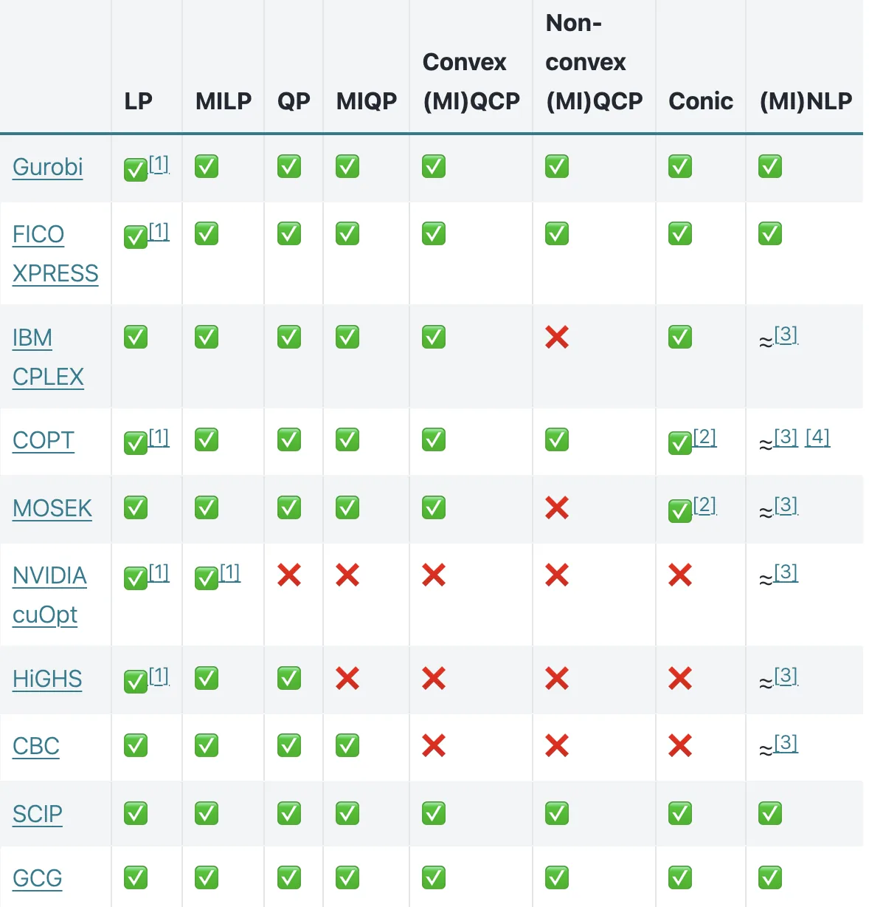
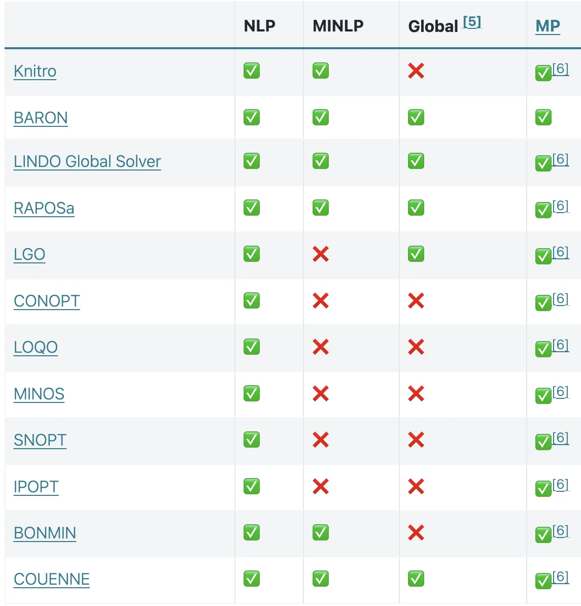
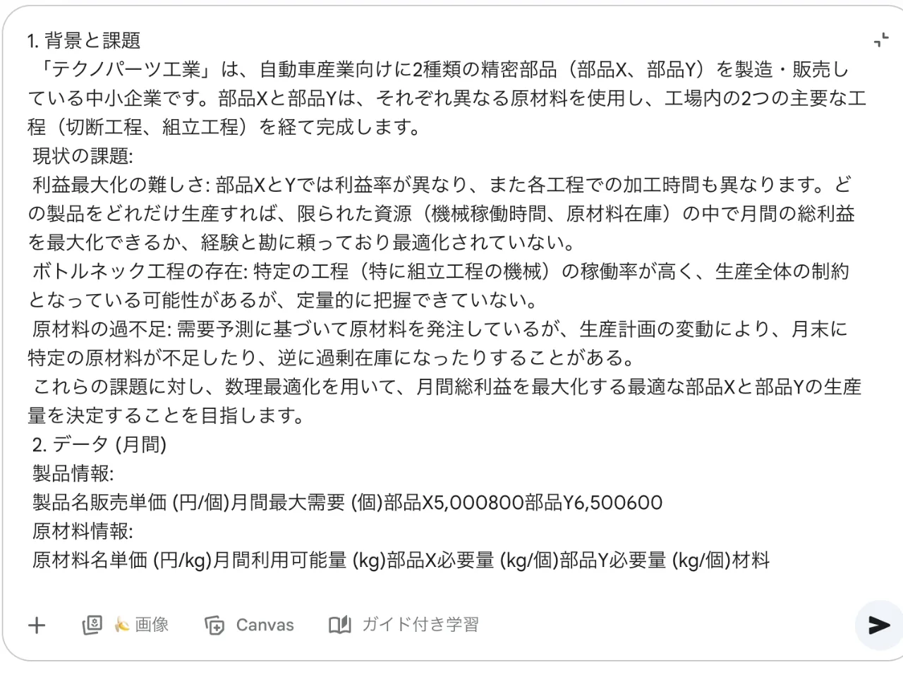
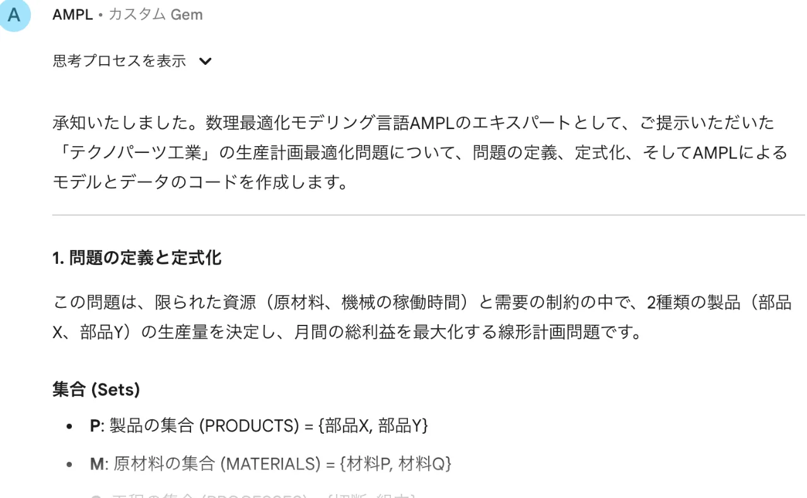
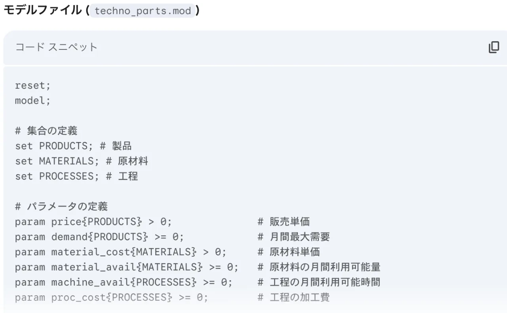

- Home
- Products
- AMPL
数理最適化モデリング言語 AMPLの概要
数理最適化モデリング言語 AMPL（A Mathematical Programming Language） は、数理最適化モデルを記述するための高水準モデリング言語です。
開発元のAMPL Optimization社によれば、利用組織は50か国以上に及び、UPS、Siemens、Rio Tinto、U.S. ARMY、LinkedIn、ENGIE、O'Shaughnessy Asset Managementなど、物流、製造、資源、エネルギー、IT、金融、政府機関と幅広い分野で採用されています。同社は、AMPLで構築された最適化モデルが影響を与えた収益を2,000億ドル以上（約30兆円）、AMPLベースのシステムによる運用コスト削減額を5億ドル以上（約750億円）としています。※ 1ドル150円で換算。
当社は、AMPL の「日本国内総販売代理店」として、AMPLや各種最適化ソルバーの販売・導入支援・技術サポートを一括してご提供しております。
AMPLの主な特徴
数式をそのままコードに
変数・パラメータ・集合・目的関数・制約条件といったモデルの構成要素を自然な数式表記に近い形で表現できます。複雑なモデルも短く、読みやすく記述できます。
幅広い問題クラスに対応
線形・整数・非線形最適化など多様な最適化問題を、直感的かつ効率的に表現でき、ソルバー非依存の設計により、問題規模や性能要件、コストに応じた柔軟な運用が可能です。
バックエンドの最適化ソルバーとしては、Gurobi、CPLEX、Xpress などの商用ソルバーから、CBC、HiGHS などのオープンソースソルバーまで幅広く対応しています。
モデル、データ、ソルバーの分離
最適化モデル構造 （変数、目的関数、制約条件）と数値データ（係数、上下限など）を分離管理する設計により、モデルの再利用性が高く、大規模データにも容易に対応できます。
また、特定ソルバーの構文に縛られません。一度モデルを書けば、線形計画・混合整数計画・非線形計画など問題タイプや予算に応じて、商用ソルバーとオープンソースソルバーを自由に選択・切り替えできます。
大規模ほど差が出る
AMPLの処理系はC言語で実装されており、Pythonベースのモデリングと比べてモデル生成が圧倒的に高速です。大規模問題ではこの差が効いてきます。加えて前処理（presolve）機能が非常に強力で、ソルバー単体で実行するより速く難問が解けるケースがあります。
AIと相性が良い
長年世界中で使われてきた結果、大規模言語モデルの学習データには大量のAMPLコードが含まれています。そのため、AIが得意とするプログラミング言語の一つになっています。AMPLは機能が豊富なぶんハルシネーションへの備えは必要ですが、適切なガードレールを設ければ、自然言語による問題説明からのAMPLコード生成は容易です。
実務で効く3つの強み
高い安定性と信頼性
AMPLは1985年、ベル研究所のRobert Fourer、David M. Gay、そして『プログラミング言語C』の共著者として知られるBrian W. Kernighanによって開発されました。以来40年にわたり、世界中の企業・政府機関・研究機関で使われ続けています。長い実績と技術的蓄積に裏打ちされた安定性は、失敗の許されない実ビジネスの現場でこそ価値を発揮します。
組み込みは自由自在
Python、R、C#、C++、Java、MATLAB、Cの公式APIが全ライセンスに無償で付属し、既存システムの中からモデルの生成・更新・求解を制御できます。pandasや業務データベース、Colab・VS Code、AWS/Azure/GCP、Streamlitまで、実務の流れを止めずに最適化を導入できます。詳細
想定外の変化に強い
最初は線形だと思っていたモデルに非線形項や整数変数が必要になる。扱う問題例が想定より大規模になる。最適化プロジェクトでは日常的に起こることです。AMPLなら、無料ソルバーから商用ソルバーへ気軽に移行でき、逆に開発は商用ソルバーで時短し、運用は無料ソルバーで回すという選択も可能です。
商用最適化ソルバー
当社では、商用ソルバーとして Gurobi、CPLEX、Xpress、COPT、Knitro、CONOPT、MINOS、SNOPT、Baronを取り扱っております。その他の商用ソルバーをご希望の場合はお問い合わせください。
Gurobi Optimizer
線形最適化（LP）、混合整数最適化（MIP）、および二次最適化（QP）に対応する業界屈指のソルバーで、その卓越した高速性、ロバスト性、スケーラビリティで知られています。
IBM ILOG CPLEX
大規模な線形最適化および混合整数最適化問題を高性能に解くソルバーで、ロバストなアルゴリズムが特長です。
FICO Xpress
複雑な線形および混合整数モデル向けの先進的ソルバーで、高い性能と柔軟性を提供します。
COPT
線形・整数最適化問題に対応する競争力のあるソルバーで、速度とスケーラビリティ、最新のアルゴリズム革新に最適化されています。
Artelys Knitro
先進的アルゴリズムを備えた大規模最適化向けの非線形ソルバーです。
CONOPT
スムーズな非線形問題に適したソルバーで、工学や経済分野で広く使われています。
SNOPT
航空宇宙や工学分野に特に適した、疎な大規模非線形モデル向けに最適化されたソルバーです。
MINOS
制約付き非線形最適化問題に対して信頼性の高いソルバーで、エネルギーや物流分野でよく用いられています。
Baron
非凸問題に対してグローバル最適性を保証する強力なグローバル最適化ソルバーです。
オープンソース最適化ソルバー
CBC
COIN Branch and Cut（CBC）は、C++で書かれたオープンソースの混合整数線形最適化（MILP）ソルバーです。カスタムの分枝カット法ソルバーを構築するためのライブラリとして利用でき、単体の実行ファイルとしても使えます。
HiGHS
HiGHSは、線形最適化（LP）・混合整数最適化（MIP）・凸二次最適化（QP）に対応するオープンソースソルバーです。C++で開発され、MITライセンスのもとで公開されています。C、Python、Julia、Rust、JavaScript、Fortran、C# など、複数の言語インターフェースを備えています。
IPOPT
IPOPTは、大規模非線形最適化のオープンソースソルバーです。滑らかな制約を持つ連続最適化問題を対象とし、変数・制約が数万規模に及ぶモデルでも安定して解を求められます。
Bonmin
Bonminは、混合整数非線形最適化（MINLP）のオープンソースソルバーです。分枝限定法と内点法を組み合わせることで、離散変数と連続変数が混在するモデルを効率的に処理します。
このほか、オープンソースソルバーであるSCIP、GCG、Couenne、NVIDIA cuOptなどとも連携可能です。
掲載内容は予告なく変更される場合があります。最新情報は下記の公式サイトにてご確認ください。
各ソルバーの対応可能な問題


掲載内容は予告なく変更される場合があります。最新情報は下記の公式サイトにてご確認ください。
AIを用いたAMPL自動コーディング
Google Gemini（Gem）を活用して AMPLモデルの自動生成をサポートするアプリを公開しました。
数理最適化の専門知識がなくても、自然言語で要件を入力するだけで、AMPLコードを自動的に生成できます。
特徴
開発時間の大幅短縮
- 自然言語で解きたい問題文を入力するだけで、AMPLコードが自動生成されます。
- 手作業でモデルを組む場合に比べ、開発時間を大幅に短縮できます。
専門知識が不要
- 高度なAMPLや数理最適化の知識がなくても利用可能です。
- AMPLのモデルを自動で生成可能で、生成されたAMPLコードはダウンロード可能
無料で利用可能
- アカデミック、商用問わず無料でご利用いただけます。
使い方
手順１：問題文をテキストまたはマークダウンで入力します。
ご注意：問題文以外の文章は入力しないでください。
手順２：送信ボタンを押すと自動でAMPL定式化コードが生成されます。Canvasを押すとコードが画面の右側に表示されます。
ご注意：生成されたコードの部分修正指示はできません。
入力例

出力例


Google Gemini Gemを用いたAMPL自動コーディング解説動画
AMPL関連セミナー
無料トライアル
- AMPLおよび各種ソルバーの商用版の無料トライアル（１ヶ月）をご用意しておりますので、ぜひお試しください。ライセンス発行は、以下のお問い合わせフォームより受け付けております。
- 変数制限ありの無償デモ版はAMPLポータル（日本国内専用）よりダウンロードすることが可能です。
- 他にアカデミック版の提供も行っております。ライセンス詳細はAMPL利用ガイドをご確認ください。
*日本国内からのAMPLおよび最適化ソルバーのライセンスに関するお問い合わせ、ライセンス発行、購入等は、総代理店である当社にて対応しております。
ただし、AMPL Community Edition（商用利用不可）及び無償版アカデミックライセンスについては、AMPL米国本社のポータルからのみライセンスが発行されます。ご利用の際はAMPL米国本社のサイトから直接ライセンスを取得してください。
*各種無償版ライセンスは動的認証を行っているため、ネットワークが接続されている環境でのみご利用可能です。
*「AMPL利用規約およびエンドユーザライセンス契約」には、AMPLと連携可能な各種商用ソルバー（Gurobi、CPLEX、Xpress 等）に関する使用条件も含まれます。
*商品やサービスをご利用いただくことにより、お客様は、最新の利用規約の内容に同意されたものとみなされます。